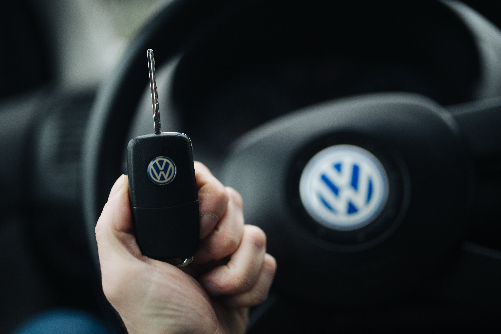

Получение водительских прав в США (DMV): как это работает
В США водительские права выдаёт не федеральное правительство, а автотранспортное управление каждого штата (DMV), поэтому правила различаются от штата к штату. Общие этапы: документы, теоретический (письменный) экзамен, ученическое разрешение (permit) и практический экзамен по вождению. С 7 мая 2025 года действует требование REAL ID — для посадки на внутренний рейс и входа в некоторые федеральные здания нужны права, соответствующие федеральному стандарту, или паспорт. По официальным источникам.

В США водительские права — не только разрешение на вождение, но и самый используемый документ, удостоверяющий личность. Их выдаёт не федеральное правительство, а автотранспортное управление каждого штата (во многих местах называется DMV); поэтому точные правила, список документов и стоимость различаются по штатам. Ниже общая процедура изложена строго по фактам.
Необходимые документы
Для получения прав обычно требуются: документ, удостоверяющий личность (паспорт), документ о законном статусе в США (виза и I-94, грин-карта и т. д.), номер социального страхования (SSN) или письмо о том, что вы не имеете права на его получение, и два документа, подтверждающих место жительства (договор аренды, счёт за коммунальные услуги, письмо из банка).
Теоретический (письменный) экзамен
Первый этап — теоретический (письменный или компьютерный) экзамен по правилам дорожного движения и дорожным знакам. Некоторые штаты предлагают экзамен на нескольких языках. Также проходят проверку зрения.
Ученическое разрешение (learner's permit)
После сдачи теоретического экзамена выдаётся ученическое разрешение (learner's permit). С ним можно водить только в сопровождении опытного водителя. Многие штаты требуют держать разрешение определённый срок (например, несколько недель или месяцев) перед сдачей практического экзамена.
Практический экзамен по вождению
Следующий этап — практический экзамен за рулём (road test). Экзаменатор оценивает навыки вождения — перестроение, повороты, парковку и соблюдение знаков. После его успешной сдачи выдаются полные водительские права.
Что такое REAL ID
REAL ID — права, соответствующие федеральному стандарту, обычно отмеченные звёздочкой в верхнем углу. Для их получения нужны полное имя, дата рождения, SSN, два документа о месте жительства и законный статус в США. С 7 мая 2025 года США начали применять требование REAL ID: для посадки на внутренний рейс и входа в некоторые федеральные здания нужны REAL ID или паспорт.
Обычные права и REAL ID
Каждый штат выдаёт как обычные (стандартные) права, так и права, соответствующие REAL ID. Большинство законных мигрантов, включая лиц на временных визах и постоянных резидентов, могут получить REAL ID или стандартные права в зависимости от статуса. В некоторых штатах (например, где REAL ID выдают только гражданам или постоянным резидентам) выбор может быть ограничен.
Права без подтверждения законного статуса
19 штатов и округ Колумбия (по состоянию на сентябрь 2026 года) выдают стандартные права без требования подтвердить законный статус. Такие права разрешают вождение только по правилам данного штата, но не соответствуют стандарту REAL ID: с 7 мая 2025 года они не принимаются для посадки на рейсы.
Иностранные права и новоприбывшие
Некоторые штаты позволяют туристам и краткосрочным гостям водить ограниченный срок по иностранным правам (или вместе с международным водительским удостоверением). Однако человек, начавший постоянно жить в штате, обязан получить права этого штата в установленный срок. Точный срок и правила проверяйте на странице DMV своего штата.